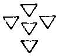

大毘盧遮那成佛經疏卷第十七
祕密八印品第十四
爾時毘盧遮那世尊。觀察大眾會。告金剛手言。彼祕密主。有祕密八印甚極祕密者。如來前品中。說入住祕密漫荼羅法竟。時諸大會復作此念。如是祕密甚為難解之法。更有何方便具足之相。速令真言行者得成就耶。時彼如來知眾所念。此祕密中為更有甚密耶。為劑此耶。以不能測故。無能發問者。故佛不待彼問。但無問而自說也。所謂有神驗者。若行者或內或外。敷列彼本尊等漫荼羅座位之時。以此八印及真言本尊之所加持故。彼諸尊等自然降赴道場。滿彼正行之願事也。復於本尊位中。安置有神驗同。同謂等同本尊威神也。竟乃去也。此是不思議感應之性。猶如水火鏡中日月應之。尚不可思議。而況如來不思議法界之感應也。此是阿闍梨所行之印。不得輒爾而習。假令已入漫荼羅者。亦不得於前輒爾而作。況餘人作耶。非直以本真言趣為摽幟。趣謂如六趣等。此是真言趣。兼漫荼羅如本尊相應者。如本尊有如是法。我亦有之故為具也(此如是一事以上同彼尊也謂形色坐立喜亦爾)自身住本尊形當如是知。知見如本尊位而得悉地也。若行者依此八印真言及漫荼羅。相應而配住位。若能知此將近悉地。不久而得。如本尊住者。前雖配祕密漫荼羅。若請本尊。謂須作此法方乃可得也。若不作此則未圓也。此經皆前後相成。共為一事綺互其文。行者甚須相照覽乃可知也。若行者持誦之時。亦須作此法。謂請本尊及所欲願等。則得速自建立也。其第一印者。作三補吒虛心合掌。其二風地指直而開張。餘如舊即是也。此是毘盧遮那如來大威德生印。從此中如來大威德生。此是一切智智之明也。其漫荼羅作三角形。於其四邊又有四三角圍遶之。故曰周也。其中當觀毘盧遮那世尊而在其中也。其三角漫荼羅。當觀八葉華。華臺上作三角漫荼羅也。即是前瑜伽座。作此三角其尖向下。其色赤也。前云三角尖向上。今向下者義用殊也。想佛在此中而作威光印也。其真言曰。
raṃ (藍)raḥ ([口*落])
第二如前作印。而雙屈二風指。以指二空指頭。合皆如va 嚩字之形。此是金剛不壞印。金剛者是如來智。非從緣生不可破壞。故名金剛不壞也。其漫荼羅形圓如va 嚩字(是波字第五聲)以金剛圍之(當是金剛有炎光也)。問其金剛。亦在漫荼羅四邊。如上也。所謂嚩字者此漫荼羅正圓而白耳。亦在花臺之上。其中有大日如來。以下皆效此也。然此八印。持誦者隨取其一。隨事用之也。其真言。
vaṃ (鑁)vaḥ (縛)
第三印如前作。即三補吒合掌。其二水火指開張。其地風指先以開張。作初割花形。此如來藏印。亦名蓮花藏印也。漫荼羅如前作圓月輪。但以四蓮圍之為異耳。中亦觀大日如來。其真言。
saṃ (三)saḥ (索)
第四印如前第三印。其二地指相並雙屈入掌。此是佛音莊嚴印。亦是萬德莊嚴印也。亦云內外莊嚴也。如世間人有種種室宅衣服事所等。眾寶之具無所不有。以莊嚴之則名萬德皆具。今此若內若外。如來眾德莊嚴皆具也。漫荼羅半月形。而側以點圍之。餘如前思之也。真言。
haṃ (憾)haḥ (郝)
第五如前三補吒合掌。而稍開曲。其二空指開張(稍向裏曲)開掌心如掬水像也。名從佛支分生印。謂從如來一切支分而生也。其漫荼羅如瓶形者意取瓶腹即是形圓也以四金剛圍之餘如前。其真言。
aṃ (暗)aḥ (惡)
第六印如前。二火指稍圓屈。俱屈入掌。鉤曲背相合也。柱此中指也。餘依舊。謂如第五印即是也。此是法住印也。其漫荼羅如虹形。有諸色間錯。猶如虹之暈色也。其形如覆虹。其下平上有金剛之幡也。從上來諸漫荼羅。有蓮有金剛有點等。今此漫荼羅。一一皆取以莊嚴圍之相間錯也(更問)。其真言曰。此初字為種子。謂嚩字。即無縛也。勃馱陀羅尼。佛總持。薩沒哩(三合)底(念也)末囉馱那迦哩。字引聲。迦梨。作益也。謂益念力。馱囉馱囉耶。上謂自持持我也。次謂持他持一切也(此一切屬上句也)薩畔薄迦嚩低。世尊也。呼本尊也。嘆法。阿迦囉嚩低。謂具形相者。三麼曳(釋如上也)莎訶。此恐未審更勘梵本。第七印如前三補吒。以二手地空。各相捻在掌內而開火指其水風指。頭相合也。二地上火也。漫荼羅虛空形(方形作之)雜色間雜。此是虛空色也。如空中含一切色像。如來大空智含一切法也。其兩邊各一點俠之。真言曰。
ā
此是種子也。此一字行。阿吠馱(一)謂具一切智也。謂己證之智也。費提(二)即以此所具之慧。持惠他人也。莎訶。第八印合掌(掌心相到)已。先左轉(轉時右手覆而左仰相合如舊也)次右轉(轉時左覆右仰仍合不散)即是也。此是如來迅疾持印。謂如來祕密神通之力。力持迅疾之義也。漫荼羅同前虛空。但改作青色。以眾多白點圍遶之。真言曰。此khi 字也。加三昧是種子也。瑜伽大瑜伽謂諸佛瑜伽也。摩訶瑜祇(上)儞(二)。此真言主住大瑜伽也。未得瑜伽令得之。謂能授與修行者願。於瑜伽而得自在也。瑜藝詵伐哩(三)欠(平)。空也。闍哩。生也。謂空生也。迦是作也。作此生等於空也。鷄(四)莎訶。
復次第一東方寶幢佛 第二南方開敷花王佛 第三西方阿彌陀佛 第四北方鼓音佛 第五東南普賢菩薩 第六西南文殊師利菩薩 第七西北彌勒菩薩 第八東北觀自在菩薩 當知此八印。皆毘盧遮那印也。如東方印則寶幢佛印。亦是大日如來印。他效此也(次依已四印也)經中次誡阿闍梨應授法。若未灌頂。一切不得示也。次若調柔人(謂柔和善順而不卒暴等)次勤精進能有堅固勝願者。謂能發勤精進。自能發無量大願弘誓者。次恭敬師長(謂阿闍梨)謂如法華身為床座等。又念恩德者(念報佛恩)清淨者(內外俱淨也)自身捨者(若求法不惜身命如雪山大士等)雖是入漫荼羅。要有如是德乃可為說。不得輒爾示人也。所以者何。此是如來祕藏之要。在所遊方不得妄宣傳也。此亦佛教阿闍梨耳。若弟子之位未得許可等。固不在言限。何可妄說。令他輕謗。自招無間大獄之罪耶。六月者舉數也。初六月不成。更六月作。展轉乃至得成乃止。如說三月亦例可解也。先持誦經六月。若無相更經六月。若有相已方作成就也。若祕釋者。六月謂淨六根故也。云三月者為淨身口意也。
次持明禁戒品第十五
時金剛手。為彼修真言行諸菩薩等。當有持明禁戒之法。猶未說是因緣。是以次復以偈問佛。故言諷誦也。然戒。西方音有二。一者此是修行戒也。謂淨身故須行之。尸羅。二者沒栗多。尸羅。戒有二。謂本性戒及制戒也。性戒。謂淨諸根今沒栗多須成就。故制之也。別後服風等也。如律因事制也。今課中戒是禁戒。或云制戒。皆是沒栗多也。是長時所持之戒。沒栗多是有時願之戒。謂行者持誦時。或心一月乃至年歲等。此事了時此禁亦罷。故無大名也。今此問中具問二義也。先問云何明制戒。即上二種。云何發起。次問云何修行。謂知是已。修所隨所在方。云何修行得無著也。住處而修行之也。問中意者。諸法寂滅無相無有能修所修之相。若有所持即是有著。今云何於修行之中。而即無著得成大果故也。次問修行有時節不。如世間戒等則有時限。乃至聲聞受具則劑一形。今此明有限劑不也。然問意者。此戒既是從緣而得。即有始終。然寂滅法無有始終之別。云何相應。設令有智以何為限量也。復次云何持戒者增長威德。謂今依止何處云何修行。以何法而令此威德增長。同於如來一切威德成就也。又問持此戒時方也。問何時得離此等也。云何時方作業法非法等。當於何時而得離也。然佛戒者。即如來自然之慧。非時非方。離法及諸作業。今問何時。而得離此諸事入於一相也。時謂一月一年一日一時等限。方謂所住之處。何處可修宜在何處也。云何速得成(謂如上事)願佛說其量。謂速疾事量也。既問終始。次問其量。問此離相之戒其量幾何而可得也。金剛手言。我已於過去先佛所。已了知此法。今為修真言行者。令彼未來世中。速得成就如來戒故。而發此問。非為有所他求及名利等。今我誠言此心。為人證知耶。唯以如來為證。而我深心唯佛自了知也。既已兩足尊為證。固請人中尊為我說也。此為未來眾生故。證者仁中尊。此即指佛也。如法相而證。故云如所證也。已上凡有五頌。是問也。時大日如來聞彼發問諸佛持明戒。故嘆言善哉善哉大勇猛。今佛以彼為一切眾生故問。是以還為一切眾生故而歎之。勇者謂能除自他一切障故。又勤精進自心無有休息。處生死中而無厭倦。能除一切無明之怨。以此眾多義故名大勇猛也。猶行大願求大法。起大行成大事。所謂普令一切眾生入佛知見。故名大士也。此有情者。梵正音索哆。是著義。猶世間人。深著身心不能暫離也。今菩提索哆亦爾。著此大菩提行。乃至無有一念休息放捨之心。故索哆也。又名薩埵是有情義。以於有情之中能修無上道。能荷負一切諸餘眾生。即是眾生中之無上故。名大有情也。眾生隨所執著義。今能自出復令他出。故名大有情也。以能持如來祕密故。名金剛手。又名大福德者。是佛歎金剛手之功德其異名也。歎其有福德者。即是積集如來功德也。今從此以下佛亦以偈答耳。所制戒殊勝先佛宣說者。佛又引佛為證。此戒過去佛所說。我今亦如是說也。究竟之法古佛道同。故引此證明無二道也。明制戒發智。制戒正覺住者。由持此戒故。發起真言之行而得悉地也。即以住此持明戒故。即同正覺。正覺是佛之別名。以行如來所行道故。即同於佛也。以此修行故。今世人而得悉地之果。此答云何住戒也。佛意言。如佛所住之戒。行人亦當如是而住。即是三平等故。福智增長故。悉地得成也。自真言等起無疑慮者。當修禁戒若得等引者。自真實謂自持真言手印想於本尊。以專念故能見本尊。本尊者即是真實之理也。非但見本尊而已。又如實觀我之身即同本尊。故名真實也。此有三平等之方便。身即印也。語即真言也。心即本尊也。此三事觀其真實究竟皆等我。此三平等與一切如來三平等無異。是故真實也。行者修行時。佛海大會決定信得入。若有疑慮。則真言之行終不能成故重加誡勸令不生疑也。以無疑故而得等引。等引者。梵云三摩呬多。即以三平等法。引攝一切功德攝在自身。故言等引也。舉此三平等。即是普攝一切功德。照此三事究竟皆等攝入自身。名為等引。又定慧等合為一。名為等引。能住如此真實乃至等引。即是住佛戒也。菩提心法修學業果。若一相和合作業離戒。佛所得智不異。戒一切法得自在者。菩提心即是如來正因(謂心王)法謂心法。即是一切地波羅蜜自在力等。以要言之。一切功德之法皆是也。此法皆是佛之眷屬。亦是菩提心之眷。屬。如花臺之有葉蘂也。此之妙果即同於佛。所謂業者。一向是善業。私謂即如來妙業也。以此修行等同於佛。從初發心乃至戒及業等。皆等同於佛。佛離一切相而住淨戒。所謂離諸相一切一味。若能如是離一切相而住於戒。此戒即是佛戒也。其所作業即佛業也。其所得之果即佛果也。以其一相無相離作業故。若行者分別此是戒此是持者此是所持法。以此不真實故。有所得故。即非持佛戒也。又此戒者。即是如來無師之慧也。由住如來智故。即於一切諸法而得自在。以於法自在故。照了一切眾生真實之性。亦能如實而利益之。令一切皆等於我也。由住此戒。攝一切法名自在。自在者即是攝取之義。謂自得法又能利他也。故次經云。有性義中通達是也。義者謂善利也。即所謂義利也。常無所著修行。則等瓦礫諸寶者。謂自得一切法自在亦利眾生。離於是法非法等種種差別之見。心無所住也。由無住故。等於麁惡及珍妙之寶。心無增減也。爾時行者觀五逆闡提。與如來功德等無有異。不生增減。何況餘耶。若至觀於一切煩惱惡業與如來功德。不生取捨。況瓦礫之與金寶耶。次答持戒量。既有始者可時當終。故佛答言。乃至落叉見誦真言數。常應時月禁而竟者。如淺略有持真言戒。劑爾所持戒劑爾所持數。謂一遍十遍乃至落叉等。或一夜一月乃至年歲。故今此中佛。言當至落叉乃終竟也。落叉者。若淺略說是十萬遍。今此不爾。落叉是見也。若見實之時。此真言行即得終竟。不然無有中息之義。非如世持誦者劑爾所。爾所即求其淺末之効也。然此中持誦。應如上先作三等之方便。謂真言身印及觀本尊。見本尊時。其心相應而住。無有能動亂之者。又觀所持真言。從本尊心中流注而入其口。猶如花鬘無有間絕。即以如是佛之功德自滿其身。亦不從身更流出也。然將成滿時漸有相現。或如本部中說成就之相。或自身有種種疾苦而得瘳愈。或有諸小虫之類不止其身。悅白清淨無諸垢穢。或先鈍根劣慧。而今逮得不忘總持。隨於一字能演多義。乃至合偈諷誦心無所礙。此是前相也。故佛言若見時乃竟。落叉是見義。亦是成就義也。行者心住三昧得見本尊。寂止正定。假使妙高山王崩壞震動。尚不能間動其心。或種種異相。如菩提場中可畏魔事。亦能安心不怖。乃至魔宮美妙婇女。亦不能傾動於其志令生雜念。何以故。以住真實戒之所持故。當知爾時去見道不遠也。或時一切所食之味乃至苦澁皆如甘露。以此緣故其身適悅。麁弊五欲之味不能移之。是貪息相也。其瞋息相者。行人六根漸淨故。猶如行大曠野盛熱之時。日光沙礫欝蒸之中。忽遇清泉而自灌洗。爾時諸忿害等所不能嬈也。復次等金石者。即是三平等也。月時數者。皆是持誦之限也。又落叉是垛義。如射中齊也。如首楞嚴文殊經習射義。若住諦理任運相應。是落叉義也。復次如上所云。一味一味真實之見難信難解。如來復以異方便世間持誦之法。而助真實見。故次說六月持誦法。然皆是祕密究竟。與前不異也。其第一月當觀金剛。是方漫荼羅黃色也。觀其自身而坐此中。即以自身而作阿字。其a 字正方黃色。當令內身充滿無缺。舉體皆是此字也。當結五股金剛印。不須持數珠。其印作虛心合掌。雙屈二水。以右加左相句掌中。二空雙並出。二風句屈向中指背。即是金剛手印也。當於一月中。但服乳不食餘物。但觀所持真言從臍而出從鼻而入。如調喘息無異。爾時但觀以此真言而為喘息也。其色亦黃。若觀真言。即以一一句為一息。若觀種子字。但無間作息也。雖云一月。然一十一百乃至一落叉月等要以見為限。復次一者即是一相一味之義也。見此名滿一月。次第二月住於水輪。其輪圓而白色。自想身在中。如上方便手作蓮華印。二地二空聚為臺。餘三指開敷。令火風稍合相並。即前觀音印也。觀其身作va 嚩字。色白。亦以白真言為出入息。問為觀尊va 字耶。為本所持種子作白色耶。是月結蓮花印。於二月中但服水而已。餘皆不食。所謂服水者但以此真言水入息白乳之字為食也。行者若相應時自得法味。持不復有他食想。但法喜味而充滿身耳。嚴備謂於中坐也。爾時但觀此字。不觀本尊像也。第三月在火輪中。謂三角赤漫荼羅。住勝上火輪也。觀在其中以其囉字為身也。作慧刀印。謂三補吒合掌。屈二風捻二空也。其出入息赤色。三月義如前。謂三月三十日三千日等。以見為限也。此三月中不求一切食。謂不得乞食等。若有施來者。得隨意食之。無人施與則不食。但以囉字為食耳。以此方便燒一切罪障。令無有餘也。以此義故一切暗盡明成。謂佛慧明也。備謂備具用此印也。第四月在風輪中。是側月也(與上同)其中色黑。用ha 訶字為身。出入息等如上說。此一月中。但飲風而住不食一切食也。此飲風。亦是以訶字出入息為食。非如外道飲氣而生也。當作轉法輪印。此即是反手相叉。前所作者也。此難作者。第五月從金輪至水同等諸佛。處金剛水輪中。謂作方黃漫荼羅。內有圓白漫荼羅。身坐其中。臍以下黃。中以上白中也。不作印。用阿嚩二字。餘如上。此五月中不得食。盡不食。謂斷一切食。但以二真言作出入息為食也。自五月以來。修無著離我之行。同於一相寂滅。即同佛也。次第六月處風火輪除一切障。亦是風輪中有火輪。准上事知。下是風臍以上是火。用訶羅為食。得與不得亦一切不食也。迄捨利養。次佛說其功德。行者以此方便行故。一切梵釋龍鬼八部。遠而敬禮共所守護。來至其前作奉教命。乃至藥神等亦來。問其所欲而奉給之。諸持明仙住其左右。一切惡鬼羅剎七母等為人害者。亦遠而敬禮。見其身如大劫之火威光猛盛。隨一切善願自在成就。諸為障者皆不得便。猶如大吉祥金剛觀音文殊等。無有異也。
次阿闍梨真實智品第十六
上雖廣說阿闍梨弟子之相。及方便作漫荼羅度弟子等。爾時執金剛。次復請問大日世尊。諸漫荼羅真言之心。然是中阿闍梨真實之相。猶未廣說。今者金剛手。為滿足其義味故。更次復問。云何是一切真言之心。為持何法以何方便而得阿闍梨名。又誦持何等心真言。而得阿闍梨名也。次佛以金剛手。能建立一切眾生善根滿彼真言行故。而觀此發問悅可其心。故歎也。知彼眾心所欲聞法。而問之。故令歡喜也。尾扶是佛之別名。亦是法王義。謂聲便故用此音說也。又復此中真言心者。此心梵音汗票馱之心。即是真實心也。從前以來皆是偈問答。今亦偈也。次答言祕密中最者。真言智者。謂智中智之無上無過也。今我將說此法。汝宜一心諦聽也。次云佛子善哉善哉大有情者。佛歎金剛手。欲令彼大眾生歡喜故。如是說言。謂隨問答。祕有之相最祕相也。從心真言所生智。此最為大。所謂一切心者即阿字也。以一切言音皆從此字為首。若無此阿聲。即離一切之語無有可說。當知但開口聲。即是a 阿字之聲也。上文俄若拏那麼(並上聲)雖云離阿聲。然阿有內外。若外聲雖無。然不得離阿字內聲。內聲者即謂喉中阿聲也。當知此阿。即是一切法本不生義。若能如是照了本體不生離因果者。即得常住不生也。此心真言即是無量義處。遍生一切世出世間之法。離一切戲。於諸戲論永息而巧妙智生。此智即是奢摩他毘鉢舍那之智。從此智有無量慧方便生。以離分別戲論故。遍一切處也。巧妙智者。即是一切智智之別名也。何等祕密主。云何阿字。是一切真言心也。一切真言心者。佛又自徵問而答也。然此阿字即同種子。如世間。佛兩足尊說阿字名種子。種子能生多果。一一復生百千萬數。乃至展轉無量不可說也。然見子識果。因既如此。當知果必如之。今此阿字亦如是。從此根本無師自然之智。一切智業從之而生也。布諸支分者。支分即是自心也。由此心即攝一切身分。離心無身離身無心。亦同於阿字。故互文也。若布此者即同諸佛。謂從字有果果即是佛。能正遍知故名為正覺。由識此字之理性故。得如來名。此字之理性者。即是此心本不生之義。是故一切如是。謂皆同阿字。皆是諸真言也。及安住支分。謂雖加諸字。亦有阿字在中也。又遍住於支分阿字為心。如人有心能遍支分。此心皆受苦樂。阿字亦遍一切支分也。然即是此心本不生之義。佛兩足尊說。是故一切支分安住。支分布。如相應依法一切遍授者。次勸行者當布支分中。謂布在心上也。梵云阿伽羅。阿字遍一切字。若無阿字則字不成。要有阿字。若字無頭即不成字。阿為頭也。遍謂遍一切。一切有事理。謂言說理證。真言理皆遍。故重云一切也。此阿者。如人身支分及內心。此阿一切遍也。若布一切字。無身心即支分不具也。是身支分也。依法如理是布一切處。遍謂遍布也。雖未能遍布一切字。以此阿字為初首。即是遍布一切諸字也。然此阿字。能說一切世間語言。復因此語言。得解一切出世之理也。所以者何。要因此阿字。生一切世間之語言。然此語言不離阿字。以不離阿字故。即知是不離於法體不生。是故因阿字門。是有世間一切法。因世間一切法。得悟阿字門也。又以此心即是遍於一切身分。是故隨布在於身之支分。即是依法如理過布諸支分也。是故遍一切字。亦遍一切身之內外也。故今遍應理。是相和合義。猶阿字遍一切字故。即是和合也。即哩比字加於阿字也。然迦字等。若口無阿字之聲。則不成字。當知此字本無言德名字。因阿字而得有也。如人無頭即一切支分皆死。此迦字等亦如是。若不以阿字為頭。即不成亦不名字也。故阿字為命也。哩比得伊伊等三昧聲。亦因定發起也。假令迦字若無阿。但於喉中作短裓聲。道迦字不成也。以加阿字即成迦故。當知阿字不生。迦是無作。其義即是相應和合成。他效此。經文是故此能遍諸身。能生種種。此種種是毘濕縛。謂巧也。能生種種不思議法也。能遍一切身分也。然字者梵有二音。一名阿剎羅也是根本字也。二者哩比鞞。是增加字也。根本者即是本字。如阿字最初二音。即是根本也。次從伊(上)伊乃至烏奧凡十二字。是從生增加之字。悉皆是女聲。其根本字是男聲也。男聲是慧義女聲是定義也。其根本字遍一切處。次諸增加字亦有遍一切處。根本增加不相異也。皆以根本字體有本而加點畫。是故根本增加不一不異。猶如器中盛水。因器持水水不離器。此亦如是。更相依持能遍內外也。相應者梵音瑜祇。即阿字義。相應即是瑜祇之義也。非但阿字遍一切處。從迦佉等乃至娑訶。亦遍一切處。何以故。此等皆是根本音。其根本音即同於阿字。如迦字等。各各有從生增加之字。如迦字中即有計鷄矩俱鷄蓋。俱皆是女聲也。然迦字體上加於畫。則成增加之字。體是慧。而加是定。定慧相依持。合而為一其體不失。止觀雙行亦遍一切地也。增加遍於根本。根本遍於增加。滋生遍於種子。種子亦遍於滋生也。又此阿等之字。從字有聲。如從一阿字。凡一切語聲中有阿聲者。不得離此字也。從字表而得有聲生。以有聲故生於支分。能表一切出世間之法。若但有其字。不能詮表於理。要因聲音語言得有所表。謂赤青黃白等。東西南北大小方圓上下尊卑等一切事類。方可領解也。然從阿生一切語言之聲。當知此聲表種種差別。既從本不生義而生。見彼生表之時。即解本不生也。是故聲出之時理性即顯。本不生與一切從緣生法。互相能生互相表解也。然此阿字。非直遍於身分。然一切非身亦皆遍滿。是故從此阿字之心。生種種功德也。今欲說此布字法門。為令行者即於自身。而具生一切如來種種功德。猶如下種子已。無量果實展轉相生。故復勸行人明聽諦受也。
經云。佛子諦聽者。此佛子即當應諦聽。我今說此布字心經文也。布謂字也。心謂內心也。梵音名蘇羅多。是著義也。著微妙之法故名蘇羅多也。復次蘇羅多者。是共住安樂義。謂共妙理而住。受於現法之樂也。復次樂著妙事業。故名蘇囉多也。又以棄邪趣正義故。名蘇囉哆也。又是遍欲求義故。多蘇囉哆也。次佛答中。心心作餘支分布。如是一切皆作。我佛自住瑜伽座者。以心布於心。餘者布支分。如是一切作。即同我自身。作謂置也。謂如是作之也。布於心故名心心也。如常說心心者。謂意及末那。今此中義有異。謂以阿字而布於行者之心。阿是一切法心。而布於心。故名心心也。猶此是最初故先布於心。心是一切支分之主。阿字亦爾。是一切真言之主。既布此竟。其餘諸字則布於一切支分。如下品說也。然此布阿字法。即是前文所說。先觀其心八葉開敷置阿字其上。此阿字即有圓明之照也。將行者染欲之心與真實慧心而相和合。即同於真而共一味也。如是觀者即是如來。故云彼若如是作者即是我也。我者佛自指也。又復大我者即是如來。故云即是我也。即是我者即是阿闍梨。非但以此瑜伽故得是阿闍梨。亦以此故得成弟子也。住瑜伽座者。謂四方。謂大因陀羅坐也。金剛輪坐也。住於阿字之上。以此為座。與此真理相應座名瑜伽座。坐此瑜伽金剛座者。即是如來也。尋念如來者。謂觀於諸佛。有稱此廣大智。稱即知也。若能依教而知者。正覺大德尊。說彼為阿闍梨也。稱此故即是如來。如來即是彼。謂如是名號也。即是其身也。若具斯法。則得廣大智成就心。能成就廣大智故。得阿闍梨名也。若是阿闍梨者。當知即是佛。即是地。謂能持世間所有一切及報受等種種苗稼。我亦能持一切眾生報等。而無分別也。妙音是天名也。金光明云大辯天女。大辯謂舌也。我出音勝百千梵聲。故得名也。梵謂涅槃。先大梵是解脫。此中梵是梵志者。謂未證也。梵行謂修梵行者名。當知即是菩薩。當知即是梵天。當知即是韋紐天。自在天別名。正云毘瑟紐。當知即是日天。當知即是風天。月天。梵是帝釋。大梵。當知即是黑夜天。即是閻羅。具大涅槃名為梵。尾是空瑟紐是定。是定是佛四神足也。自在謂於法得自在。如薄伽六義也。能除一切眾幽暗。謂大悲日也。又嚩嚕拏是水龍。由主水故。即是具大悲水能遍灑一切也。如月長養世間一切物。佛亦能長一切眾生菩提心也。帝釋因百施得成也。百度開四城門廣施也。釋是百。迦落是勇施也。佛具無量百施。故名帝釋也。造立世界主。謂五大天。世外道謂造立世界主。亦是毘首羯磨。我亦生一切心心主。故得名也。迦羅時。三時即是我也。謂閻摩者也。謂將有所去。謂善到惡到也。將至殺害處名閻摩羅。然我將至善處。而殺害彼煩惱也。也謂三乘車。麼即我也。是我所立時過三時。皆是我。悉是心也。對彼時外道也。浴言天名。謂淨身口意最是第一浴也。說謂外道其名。謂我即是也。即是比丘。即是盡者。即是。吉祥者謂功德天。我亦具一切法也。謂持祕密為三密也。一切智亦外道有此名。我即如實是也。由自證故。非但有空名也。一切見亦是天名也。一切法自在。亦是世傳有此天也。我即如實是也。財富者亦天名。謂自在須與即與。佛即是也。若住菩提心及以聲智性。不著一切法說名遍一切處。謂一切種智之別名。是具一切智也。云菩提心即是定。從字有聲出。以智分之即智也。即是持誦者。真言從我生故。我即是持誦者。亦是持真言者。由從我生故。我持之也。由真言字從我生。我即持故。具大吉祥者亦即真言王。謂我也。即是執金剛。謂持此密慧也。次所有字輪若在於支分。心位心住隨便安置也。住於位位即所住也。即是地天。即是妙音天。即是常浴及常梵行者。亦即是常澡浴外道之本尊等。鉢羅是解脫義。即梵天也。亦即是比丘。即是漏盡者。即是妙吉祥。即是持祕密者。即是一切智者。一切見者即是。一切法自在王。即是住菩提心者。即是智性。即是一切法中不著。即是一切遍皆說。即是持吉祥。即是真言王。即是持金剛。以要言之。一切大漫荼羅之所布列者。及如來一百八號等。無不即是也。何以故。以此阿字法體常遍一切處故。若能如是相應。即同毘盧遮那遍一切處也。故佛於經中作如此說也。上來說心竟。次布身分。謂於眉間當置hūṃ 字。此是一切執金剛所持處也。次於心上四寸許觀置sa 字。即是一切蓮華手部所住處也。我心住一切遍自在。我皆遍種種有情非有情阿字第一命者。謂即以阿字為心。故遍於一切自在而成。言此阿字不異我。我不異阿字也。乃悉遍於一切情非情法。此諸法即以阿字而為第一命也。猶如人有出入息以此為命。息絕即命不續。此阿字亦爾。一切法有情以此為命也。
次va 字水說名(謂想嚩即同水也)次想ra 即同火也。次想hūṃ 吽即一切忿怒持明也。又想kha 佉字即同空也(當有訶字即是風。今欠之更問。即是也)所以作此觀者。欲布一切字。於是身分。即是一切如來法界之法。萬德皆備。猶如坐道場時。非金剛坐則不能勝。今亦如是。欲備一切如來功德。先須用此地水火風。四輪及空。然後作具法也。以能如是第一真實若解者得阿闍梨名。壇中名字雖殊。皆是諸佛功德。為度彼故說也。是故諸佛說一切應知常作勤修者能得不死句。猶阿闍梨以阿字加其身。故即是漫荼羅一切大會天等也。了達其義。即是真實阿闍梨也。次勸常當如是修行即得不死句。是常住義常住即佛也。
布字品第十七
即義與上相連也。亦明古佛道同。引一切佛同說也ka 迦字(咽下)kha 佉(上腭)ga 哦(頸)gha 重伽(頰也謂從頂十字直下至喉此中間也)ca 遮(舌根)ccha 車(舌中)ja 闍(舌頭)jha 重社(是舌生處)ṭa 吒(脛是兩脛也)ṭha 吒(腿髀)ḍa 拏(腰謂繞腰帶周匝處)ḍha 重荼(二臀坐處)ta 哆(大便處)tha 他(腹)da 陀(兩手)dha 重陀(二脇)pa 波(背也遍之)pha 頗(胸也)ba 麼(二肘已上膊下)bha 重婆(臂下)ma 莽(心也)ya 也(陰藏)ra 羅(兩眼)la 攞(遍額)i 伊(上)ī 伊(目精或目角也此二字先配右後配左目凡一切配有左右者皆先右後左也)u 鄔ū 烏(兩脣也先上次下也)e 翳ai 愛(二耳也先右次左)o 汗au 奧(右頰也先二次左)aṃ 暗(成佛句也在頂十字)aḥ 噁(是涅槃義無處所不遍配支分)。若能如是作。即是佛即是一切智。即是資財(具一切法財者也)即是佛子也告之也。
次菩薩戒品受方便學處品第十八
金剛手於經首。已問佛菩薩戒義。佛前說入漫荼羅時為弟子授戒時。即合說此戒法要。先受此戒已。住斯學處。然後合聞如來祕密之行。此戒未造漫荼羅前。即合為說也。佛前說入漫荼羅時。為正說入漫荼羅方便故。未及說之。故金剛手騰前事復問。故經云。爾時金剛手祕密主。白佛言。願世尊說諸菩薩大有情等句。是具迹義住處義即學處也。修學句具方便智慧。謂眾德歸趣此人備具此戒也。謂諸方便等得在於身也。普來義也。慧方便等普趣其身。此正譯也。離疑惑謂二意也。如在岐路不能進也。惡意無疑慮令生死流轉不壞。此以上皆經文也。謂菩薩住此學處故。能令不捨於大悲離於惡意惡意即是疑惑也。即以此戒故。於生死流轉中而不可壞。不壞即是常住無能害也。問意言。云故何於生死流轉中而得此戒。常不毀壞不可破壞也。時毘盧遮那世尊。處一切以佛眼觀一切法界。告執金剛祕密主言。諦聽金剛手也。法界佛眼觀金剛祕密主告言諦聽者。佛以大士請說一切菩薩根本之行。將欲答。故先以如來眼遍觀大會者。即是遍觀法界也。此中云諸法界者。謂觀佛界法界眾生界。觀此三法界故名諸法界也。觀法界。即是一切如來境界眾生界者即是一切眾生應度因緣。皆是法界也。既遍觀已。知有堪任聞此深行之戒者。故答金剛手也。次告言諦聽金剛手。今說善巧修行道。若菩薩摩訶薩住於此者。即於大乘而得通達修行道善巧說。若於此住菩薩大有情。而得通達大乘者。此修行道即是菩薩戒也。三世諸佛皆由此道至菩提。故名修行道也。住此諸佛修行道故。諸菩薩即能通達大乘也。何以故。今此戒即是一切眾生自性本源之戒。若住此性淨金剛戒。自然於一切法而得通達也。持不殺生戒所不應為。謂應持不殺生命戒也。謂加諸生命字。不得斷命也。次佛告其戒相。謂不殺生命。不得不與而取。欲邪行。誑語惡口兩舌語綺語。及貪瞋邪見等。即是菩薩戒也。此中不殺者。謂於一切有命之類。乃至不生一念殺心。以無殺心故名不殺戒。餘效此而說也。初授此戒時。阿闍梨先當授與三歸。此中三歸者。即是常住祕密之三寶。非是法僧別住。同於有餘不了義經。如涅槃鴦掘等中。應引之廣說也。又如上文中師為授三歸法也。既授三歸了。阿闍梨次當勸發其心令生決定大誓。受此十無盡藏。還三遍授之。受已令彼自表白。我某甲。今依十方諸佛及阿闍梨邊。受得所戒竟。今日今時我某甲得名為菩薩也。此戒無有時節。乃至盡形受之。盡未來際無有捨義也。若如上所說戒。於一月一年等入道場時。謂行此方便。事了即休等則有時限。然深義說之。亦至見真方息也。菩薩戒略有二種。一在家二出家。此二眾中復有二種戒。一自性修行。二是制戒。今此十戒。是菩薩修行戒也。以是善性故。一切菩薩應行之。即涅槃所謂性自能持戒。或云自性戒也。所以謂持者。以生謗故。須將護彼意。又隨順彼意故又須持也。所以然者一切世間諸天輪王。亦有十善法。一切外道亦有十善戒。一切二乘亦有十善戒。若菩薩不如是持者。彼等即生輕慢非毀之心。我等皆有如是善法。今此人自云大士行尊妙行。而無淨戒。當知所學非真也。以生彼等疑惑不善心故。即為前人作無義利非善知識。以是故須持此戒也。二佛所制戒者。即是自具方便也。如聲聞法中。為欲修梵行盡苦原故。佛為設此方便以防護之。以是故速得成果。今大乘中亦有制戒。所謂具方便智善巧也。以有善巧方便故。今此十善成不共戒。不與聲聞外道等共。故經云。善巧修行也。此經十萬偈大本。具有授此戒等方便。今未到此土。然金剛頂中自有授法。與彼不殊。當出之耳。如聲聞有四重禁。於此中乃是偷蘭遮。非重禁也。所以者何。此十善戒。為隨順將護二乘外道故。以善巧方便而具持之。然菩薩自有根本重禁。此中所謂殺盜婬妄。但是偷蘭。非彼菩薩極重也。如前三世無障礙戒中。先令不捨三寶。又令不捨菩提之心。此即菩薩真四重禁也。若菩薩生如是心捨離於佛。即名破於重禁。所以然者。如來即是一切善法所從生處。菩薩以自歸依佛故。方有一切地波羅蜜等萬行成就。猶因種子方得生果。若捨阿字本自然之智。則一切善不得生。故捨佛。即是斷一切菩薩之命。而絕其成佛之根。若行婬盜殺妄。但於道有礙。非是絕成佛之根本。故但成偷蘭也。以佛不可捨故。法僧亦爾。如聲聞經。尚云捨一卷經戒捨七眾生一人。即和合義斷不成具戒。況一切菩薩。同乘一道而至道場。佛佛無異無別。故當知隨有所捨。即斷一切法命也。菩提心亦爾。是一切諸行之本。若離菩提心。則無一切菩薩法。故捨之亦犯重也。如聲聞經犯重已。即非沙門非釋子不入眾數。今此中。若捨佛法僧菩提心。即不入眾數。如彼二乘毀四重也。然行者自知犯戒。更自洗浣其心而重受之。即還得戒。不同二乘戒。折石斷頭無再得義也。復次菩薩自有十重戒。如前不殺等不在其數。乃是偷蘭也。云何十耶。其四如前所說。更有六重并為十也。第五重禁者。謂不謗一切三乘經法。若謗者即是謗佛法僧謗大菩提心。故犯重也。以祕密藏中一切方便皆是佛之方便。是故毀一一法。即是謗一切法也。乃至世間治生產業藝術等事。隨有正理相順是佛所說者。亦不得謗。何況三乘法耶。第六不應於一切法生於慳悋。若犯毀重禁也。以菩薩集一切法。本為一切眾生。若有所祕惜。即是捨菩提。故犯重也。第七不得邪見。謂謗無因果。無佛無見道人等諸邪見。皆是也。若生邪見。自然捨佛法僧及菩提。故犯重戒。而聲聞但得偷蘭。是故當知方便不具足。但是隨一途說也。第八於發大心人。從前勸發其心。不令退息也。若見其懈退而不勸發。或阻止其心。若令離無上菩提之道。即是違逆一切如來所應作事。故犯重也。第九於小乘人前。不觀彼根而為說大法。或於大根人前。不觀彼根而說小法行。犯重禁。此即是方便不具。以違逆如來方便故。差機說法為人天怨。故犯重也。第十菩薩常當行施。然不得施與他人害物之具。謂施酒施毒藥刀杖之類。一切不饒益他之具。即犯重也。以菩薩常行利他行。今則相背。故犯重也。當知前不殺等。是將順他人意。又初入法者所持之戒。今次說十事。乃是一切菩薩正行之戒也。若菩薩以正順後十戒故。假使行前十事中。而不為犯。次佛言。祕密主。如是修學句。若菩薩隨所有修學。即與諸佛菩薩同行。當如是學。聲聞以近彼佛戒等名近同。今與佛同等也。修學句。菩薩隨所修學。諸佛世尊及菩薩同事。應當學者。此身三口四意地之三。即是一切菩薩修學句。是一切菩薩學處也。此即是一切菩薩隨順眾生戒。隨順即是同事也。又一切佛菩薩皆如是行。以一切菩薩法爾當行故。今我亦如是行。即是與一切佛菩薩同事業也(更問)此本性戒自然合行故涅槃云性自能持戒也。次金剛手問意云。爾時執金剛祕密主。白佛言。世尊於聲聞乘。亦說此十善業道。世尊於世間人民及諸外道。亦於此十善業道。常願修學。常願謂要心常持。即受戒之別號也。轉具者。具謂具此戒。轉謂皆也。皆具行也。世尊彼有何差別。云何種種殊異也。聲聞緣覺亦有十善戒。亦謂息世譏嫌。及性善故持之。一切外道世天亦有十善戒。今佛復說菩薩戒者。但十善即是。然則有何差別耶。故佛次為分別之。歎言善哉善哉祕密主。又復善哉。汝能問如來如是義。應當諦聽。今當為分別者。分別有無量。今合為一。今說此法門也。能問如來如是之義事次答也。諦聽當分別道一道說法門者。謂一切法不出阿字門。即是一道也。道者謂乘此法。而有所至到之義也。一道者即是一切無礙人。共出生死直至道場之道也。而言一者。此即如如之道。獨一法界故言一也。於此一道中。而分別種種差別。猶如無量岐路皆至寶所。殊街同歸也。又如以一阿字門分別一切字。當知雖有差別。不異阿字門。今此十善亦爾。隨上中下智所觀自成種種。非一切眾生本原戒而有差別也。然佛為破大眾所疑。答金剛手所問故。亦於一道中而分別。答其差別相耳。此分別意云何。佛言。同一如我所說。聲聞學處離慧方便。教令成就開發邊智。非等行十善業道不無其異也。故次言若聲聞乘學處。我說彼方便教令。成就邊智開發。非十善業道等行者。此答其與大乘別也。彼聲聞十善。但是教令成就。猶如國王有所約勅。自今若行如是事者。當與如是等罪。彼人以畏罪故。順而不逆不敢違越。聲聞亦爾。以佛所制威德波羅提木叉教命。尊重法王所制故。不敢毀犯。非是具足方便自性能持。又但為自持。非為普順一切眾生。是以但是一邊之智。非中道實相之戒。是其差別也。諸外道我復不著他因。復次世間離執著我故所轉者。次明與外道異也。彼宗所計。我神等而生一切。今我此身乃自非我。是大我所生耳。若是我所生者。善惡因果皆因彼出。今此身心即自無我。持戒之果為誰而轉修。誰受其報耶。當知因果義不成。故猶如無種子之花果及石女兒。能以空花為鬘無有是處也。此石女兒喻。撿佛性論意具說。復有著於斷常而行十善法。若常則無果報。今持十善依何而住。若斷者亦無果報。亦何依耶。故十善名同。如虫食木偶得成字。不可比也。次明大乘十善差別之相。若菩薩戒者。以方便智攝一切法。平等入當勤修習。言此戒入一切平等法。離於自他而普淨自他。自開一切如來知見亦爾。一切等同於我。以入一切平等法界而修此戒故。與一切不共也。佛次更欲廣說菩薩十善戒相。令真言行菩薩無有疑惑。故以大慈大悲眼。眼觀察眾生界。告金剛手言。此梵音眼。而有二名。今具存之。以慈眼悲眼故重說二名也。先說不殺相。謂盡形壽乃至捨一切刀杖等。殺法殺緣殺因殺業等。凡與害命相應者。皆遠離之。觀一切眾生內怨之心。悉同於己。乃至有形之類永無害意。然不但以不殺成持戒也。當謂其方便慧。謂觀此人必造五無間謗法等緣。當增重障無由出離。以大悲心籌量。若害之能利多人。或令彼有出離因緣。寧自入惡道。謂將護彼。以大悲心而加害之。此即方便。非彼二乘共也。次盜亦爾。雖一切乃至草葉不取。亦為破彼匱乏因緣。觀彼聚積無厭。由此自損成大障業。乃至方便取之。為修種種功德。然後告之令彼隨喜等。如是種種方便。但隨順深行十戒之行。以大菩提心而為導首。一切無犯。此是持犯之相也。前已略說殺戒。次牒更具說。祕密主菩薩盡形持不殺戒。當捨刀杖離殺害意。護他之命如護己命。餘謂有異方便也。謂餘方便也。隨諸眾生類中。隨其事業為免彼。故云隨彼業而作之。殷勤修之。令彼免報應離怨害意也。形類是眾義。如彼類造極惡事極重業。欲免彼故。假令行刀杖等無過也。聲聞戒亦有對小罪除大罪以輕易重。故今亦爾。如救水中女人等可知也。菩薩戒准亦可知。盡形持不殺命戒。當捨刀杖殺害。如己同他我生命護之。餘類眾生如類物。脫自形類。作而受報。應離怨惡意者。此第一戒相也。盡形者非但一期而已。若菩薩從初發心及成菩提。一切有命之類。尚不生一念害心。況起身口耶。其所有隨緣殺具。如殺戒中種種廣說之相。亦乃至一念不畜。況施行方便殺耶。惱害心略有九種。謂憎我身。及惡我善友。好我之怨。過去未來現在為九也。又有一類。於非情生瞋。如迦葉佛時一比丘。經行為株机所倒。大怒引鑺掘之。為刃所傷自致殞弊。即於須臾受毒蟒身。時彼弟子同學等。方焚其身時。後身毒蛇在彼焚處遇佛。以因生惡心欲害之。時佛教誡彼。爾前身以忿非情故。自致此報。今又甚彼。將更受惡身也。其後不久有童子等。以彼害人。即共殺之而焚其身。彼又以見害忿怒及欲害因緣。入大地獄。即於焚故身未了時。後報二身同時被見燒。當知此是於非情處生瞋。所獲報也。又如律中。比丘經行。伊葉刺額血流。怒言。佛何故乃制此戒。有何義利耶。因掣異方。謂是緣生受大苦。蟒身五百商人。為護他故。以大慈悲害蛇。令蛇免罪生天。商客悉患勉也。斷之如有部大律說也。非情處尚爾。況有情處耶。菩薩觀此事故。自不生心亦勸他離也。餘如前說。金槍緣廣說。又師子救賈客害蛇因緣。在寶藏經大方便經等。復次菩薩持不與取戒。他所攝受用物取不起心。況復餘物不與取。諸餘有情見慳慳不施與。無福作隨類形。眾生慳害已彼離施。為彼與時如是持不取戒(對不殺廣說今此戒亦然)若他所攝受用物。不起觸取之心。況復餘物不與而取。有餘方便(雖不言方便義亦有之)見諸有情而極慳悋積聚而不施與。不造作福隨眾生像類。害彼慳故離於自他。為彼行施得妙色等(謂勸發他施也)。
大毘盧遮那成佛經疏卷第十七